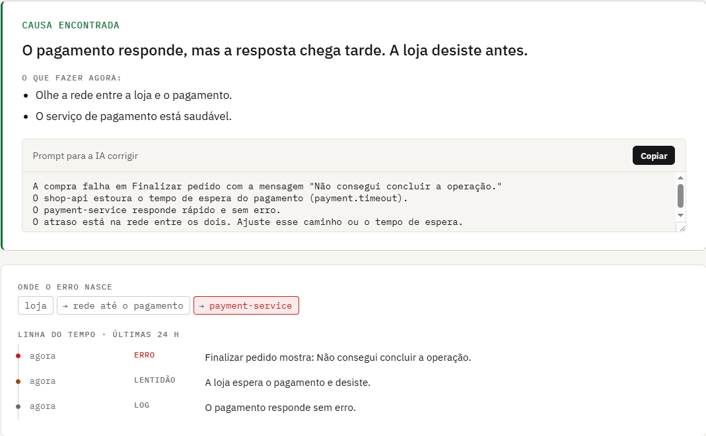

O TracePilot investiga
por você quando algo quebra.
Ele diz o que quebrou, mostra a prova e entrega um texto para a sua IA corrigir.
Quem sofre não tem quem investigue.
Vibe-coders, software houses e startups colocam software no ar sem SRE e sem especialista em segurança.
Agentes vigiando todo o ecossistema.
Avisa
Quebrou ou pode quebrar? Alerta em linguagem simples, sem painel de engenheiro.
Investiga
Agentes especialistas cruzam as fontes e um verificador contesta a conclusão.
Apoia a correção
Entrega um prompt pronto para a mesma IA que gerou o código consertar o problema.
Ela tenta comprar. A tela trava.


Um time de agentes, não um chatbot.
Eles servem o SRE. Nós, quem vibe-codou.
| Foco | Para quem | IA de causa raiz | Dados | |
|---|---|---|---|---|
| Sentry | erros de aplicação e stack traces | desenvolvedores | Seer, dentro do Sentry | nuvem do Sentry |
| Datadog | plataforma completa de infraestrutura | times de plataforma e SRE | Bits AI, dentro do Datadog | nuvem do Datadog |
| TracePilot | aplicação, servidor e (em breve) segurança em uma visão | quem não é SRE: vibe-coders, software houses, startups | time de agentes + verificador que contesta | stack aberta; modelo local opcional |
Ser justo com eles: também têm IA. Nossa aposta é outra: linguagem de quem não é SRE, o prompt de correção para a sua IA de código e dados sob o seu controle, sem prender você a uma plataforma.
Observabilidade mostra o quê. Nós, o porquê.
Mercado global de ferramentas de observabilidade, de 2025 a 2031 (~14% ao ano). E cada vez mais código chega à produção gerado por IA.
Self-hosted, dados locais
Base aberta (OpenTelemetry + OpenObserve) cria confiança e adoção.
Por serviço monitorado
Investigações incluídas por plano; sem exigir time de SRE para usar.
Nuvem e suporte
Hospedagem, memória de incidentes, segurança e integrações.
Os dois lados do problema: IA e produção.
Dyonnatan Maia
Mede modelos de IA de verdade. Visão e linguagem. Já ganhou competição internacional. Tem um projeto avançado, o EstimaNutri. Construiu este protótipo.
Lucas Chagas
Colocou software no ar. De equipamento conectado a crédito. Passou pela bxblue e pela Verde, da Y Combinator. Também pela Locaweb. Usa IA para construir.
Por que nós: um já mediu modelos de IA, o outro já sustentou incidente em produção. Aprendemos que solução plausível não basta: diagnóstico tem de ter evidência verificável.